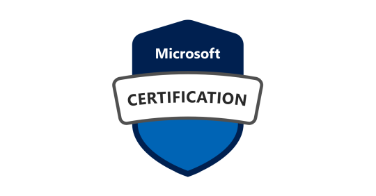
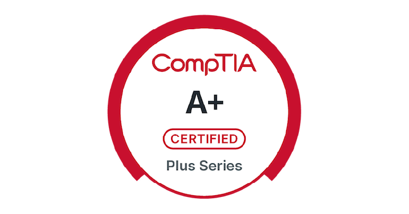
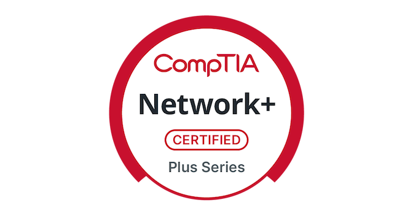
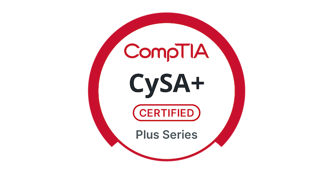
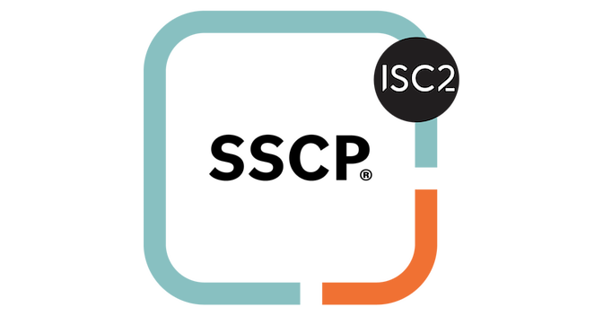
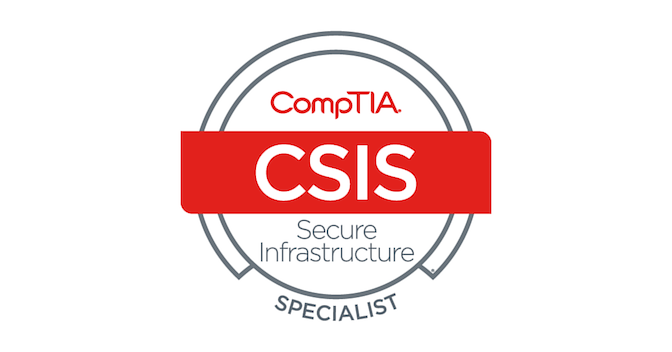
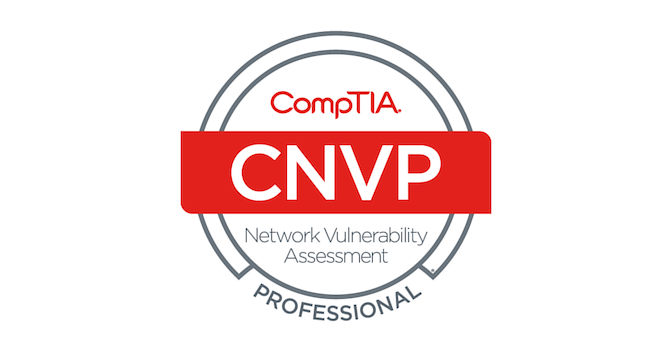
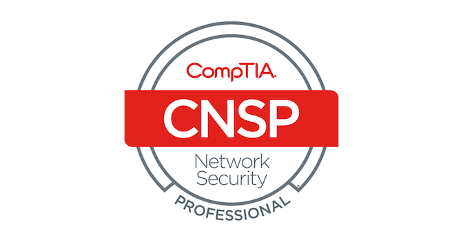
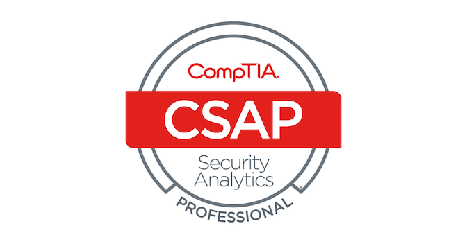
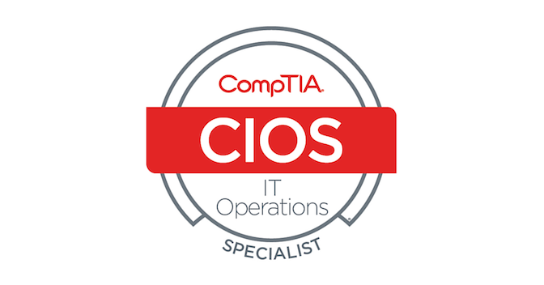

Enterprise IT support
Desktop troubleshooting, executive support, onboarding and offboarding, and collaboration tools across macOS and Windows.
See my experience ↗Reliable systems.
Secure access. Supported people.
I work where enterprise IT meets the everyday experience of using it. Endpoint management, identity, and practical automation—with a security mindset.
Currently supporting SoftBank through Saragossa · Menlo Park
raphael@rborlongan.com | https://www.linkedin.com/in/raphael-landre-borlongan/
From a walk-up support request to a repeatable rollout, I connect the technical work to the people who depend on it.
Desktop troubleshooting, executive support, onboarding and offboarding, and collaboration tools across macOS and Windows.
See my experience ↗Device provisioning, mobile device management (MDM), identity and access management (IAM), and Microsoft 365 administration.
See what I’ve delivered ↗Security awareness and phishing campaigns, TLS checks, policy enforcement, and automation that reduces repetitive work.
Explore my technical skills ↗Practical improvements to device management, internal workflows, and security assessments.
San Francisco Campus for Jewish Living
Autopilot / Intune / GPO
San Francisco Campus for Jewish Living
Power Apps / Microsoft 365
Kaiser Permanente
Java / Selenium / TLS / SSL
Enterprise mobile device management
MaaS360 / iOS / Android
A path through application security, enterprise support, and systems administration.
Saragossa Consulting | Supporting SoftBank
Menlo Park, CA
San Francisco Campus for Jewish Living
San Francisco, CA
San Francisco Campus for Jewish Living
San Francisco, CA
Five9
San Ramon, CA
Kaiser Permanente
Pleasanton, CA
Professional tools I’ve worked with, plus the technologies I explore in my personal lab.
Jamf, Microsoft Intune, Windows Autopilot, Group Policy (GPO), IBM MaaS360, macOS, Windows
Okta, Microsoft Entra ID (Azure AD), Active Directory, Microsoft 365, Google Workspace, Zoom Rooms
PowerShell, Selenium, Java, TLS/SSL checks, security awareness training, phishing campaigns, Microsoft Power Apps
Proxmox VE, Ubiquiti, Linux, AdGuard Home, Home Assistant, Plex, Kali Linux
Western Governors University
Las Positas College
Cybersecurity training · Year Up

Microsoft 365 Certified: Endpoint Administrator Associate ↗
CompTIA A+ ↗
CompTIA Network+ ↗
CompTIA CySA+ ↗
ISC2 SSCP ↗
CompTIA CSIS ↗
CompTIA Network Vulnerability Assessment Professional (CNVP) ↗
CompTIA Network Security Professional (CNSP) ↗
CompTIA Security Analytics Professional (CSAP) ↗
CompTIA IT Operations Specialist (CIOS) ↗ Google IT Support Certificate ↗ CIS 203: Computer Network Support ↗ CIS 303: Scripting Languages ↗ Splunk 7.x Fundamentals Part 1 (eLearning) ↗Interested in enterprise IT, endpoint management, and systems administration opportunities with a security focus.
raphael@rborlongan.com